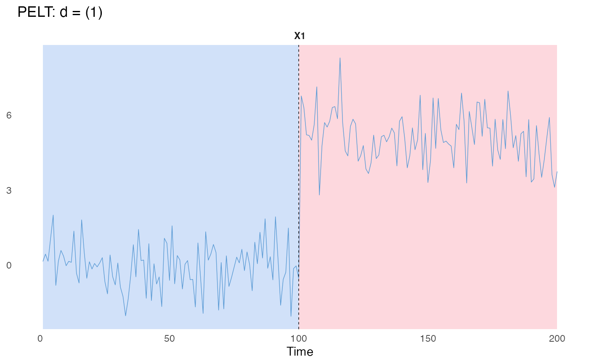
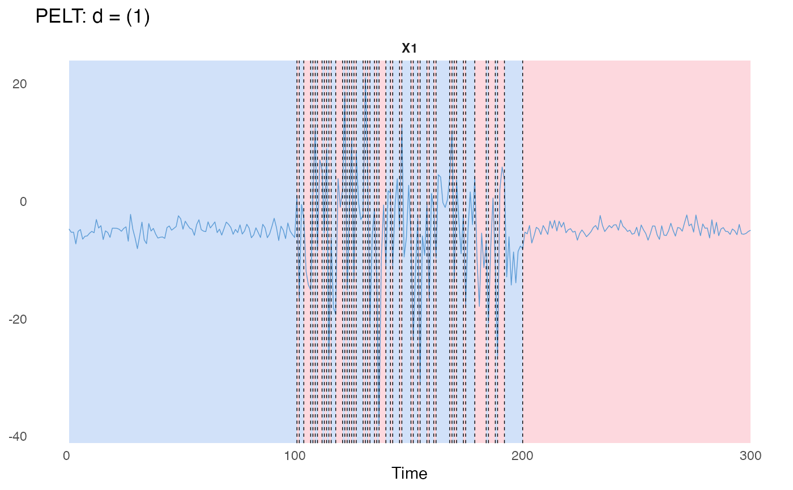
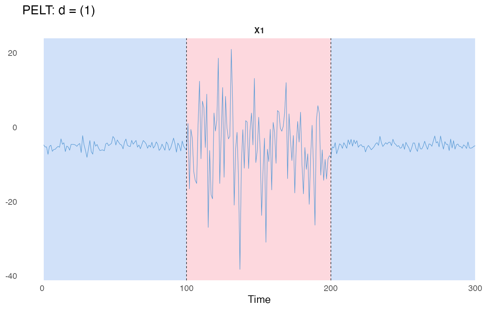

An R6 class implementing the PELT algorithm for offline change-point detection.
Details
PELT (Pruned Exact Linear Time) is an efficient algorithm for change point detection that prunes the search space to achieve optimal segmentation in linear time under certain conditions.
PELT requires a R6 object of class costFunc, which can be created via costFunc$new(). Currently, the following cost functions are supported:
"L1"and"L2"for (independent) piecewise Gaussian process with constant variance"SIGMA": for (independent) piecewise Gaussian process with varying variance"VAR": for piecewise Gaussian vector-regressive process with constant noise variance"LinearL2": for piecewise linear regression process with constant noise variance"LinearSIGMA": for piecewise linear regression process with varying noise covariance"LinearL1": for piecewise linear regression process under L1 (least absolute deviations) loss
See $eval() method for more details on computation of cost.
Some examples are provided below. See the package website for detailed usage!
Methods
$new()Initialises a
PELTobject.$describe()Describes the
PELTobject.$fit()Constructs a
PELTmodule inC++.$eval()Evaluates the cost of a segment.
$predict()Performs
PELTgiven a linear penalty value.$segments()Returns the cost and parameter estimates of each segment from the latest
$predict().$plot()Plots change-point segmentation in
ggplotstyle.$clone()Clones the
R6object.
References
Truong, C., Oudre, L., & Vayatis, N. (2020). Selective review of offline change point detection methods. Signal Processing, 167, 107299.
Killick, R., Fearnhead, P., & Eckley, I. A. (2012). Optimal detection of change points with a linear computational cost. Journal of the American Statistical Association, 107(500), 1590-1598.
Author
Minh Long Nguyen edelweiss611428@gmail.com
Toby Dylan Hocking toby.hocking@r-project.org
Charles Truong ctruong@ens-paris-saclay.fr
Huy Nhat Minh Nguyen sleepysnorlax0115@gmail.com
Active bindings
minSizeInteger. Minimum allowed segment length. Can be accessed or modified via
$minSize. ModifyingminSizewill automatically trigger$fit().jumpInteger. Search grid step size. Can be accessed or modified via
$jump. Modifyingjumpwill automatically trigger$fit().costFuncR6object of classcostFunc. Search grid step size. Can be accessed or modified via$costFunc. ModifyingcostFuncwill automatically trigger$fit().tsMatNumeric matrix. Input time series matrix of size \(n \times p\). Can be accessed or modified via
$tsMat. ModifyingtsMatwill automatically trigger$fit().covariatesNumeric matrix. Input time series matrix having a similar number of observations as
tsMat. Can be accessed or modified via$covariates. Modifyingcovariateswill automatically trigger$fit().
Methods
Method new()
Initialises a PELT object.
Usage
PELT$new(minSize, jump, costFunc)Method describe()
Describes a PELT object.
Returns
Invisibly returns a list storing at least the following fields:
minSizeMinimum allowed segment length.
jumpSearch grid step size.
costFuncThe
costFuncobject.fittedWhether or not
$fit()has been run.tsMatTime series matrix.
covariatesCovariate matrix (if exists).
nNumber of observations.
pNumber of features.
Method fit()
Constructs a C++ module for PELT.
Arguments
tsMatNumeric matrix. A time series matrix of size \(n \times p\) whose rows are observations ordered in time. If
tsMat = NULL, the method will use the previously assignedtsMat(e.g., set via the active binding$tsMator from a prior$fit(tsMat)). Default:NULL.covariatesNumeric matrix. A time series matrix having a similar number of observations as
tsMat. Required for models involving both dependent and independent variables. Ifcovariates = NULLand no prior covariates were set (i.e.,$covariatesis stillNULL), the model is force-fitted with only an intercept. Default:NULL.
Method eval()
Evaluate the cost of the segment (a,b]
Arguments
aInteger. Start index of the segment (exclusive). Must satisfy
start < end.bInteger. End index of the segment (inclusive).
Details
The segment cost is evaluated as follows:
L1 cost function: $$c_{L_1}(y_{(a+1)...b}) := \sum_{t = a+1}^{b} \| y_t - \tilde{y}_{(a+1)...b} \|_1$$ where \(\tilde{y}_{(a+1)...b}\) is the coordinate-wise median of the segment. If \(a \ge b - 1\), return 0.
L2 cost function: $$c_{L_2}(y_{(a+1)...b}) := \sum_{t = a+1}^{b} \| y_t - \bar{y}_{(a+1)...b} \|_2^2$$ where \(\bar{y}_{(a+1)...b}\) is the empirical mean of the segment. If \(a \ge b - 1\), return 0.
SIGMA cost function: $$c_{\sum}(y_{(a+1)...b}) := (b - a)\log \det \hat{\Sigma}_{(a+1)...b}$$ where \(\hat{\Sigma}_{(a+1)...b}\) is the empirical covariance matrix of the segment without Bessel's correction. Here, if
addSmallDiag = TRUE, a small biasepsilonis added to the diagonal of estimated covariance matrices to improve numerical stability.
By default,addSmallDiag = TRUEandepsilon = 1e-6. In caseaddSmallDiag = TRUE, if the computed determinant of covariance matrix is either 0 (singular) or smaller thanp*log(epsilon)- the lower bound, return(b - a)*p*log(epsilon), otherwise, output an error message.VAR(r) cost function: $$c_{\mathrm{VAR}}(y_{(a+1)...b}) := \sum_{t = a+r+1}^{b} \left\| y_t - \sum_{j=1}^r \hat A_j y_{t-j} \right\|_2^2$$ where \(\hat A_j\) are the estimated VAR coefficients, commonly estimated via the OLS criterion. If system is singular, \(a-b < p*r+1\) (i.e., not enough observations), or \(a \ge n-p\) (where
nis the time series length), return 0.
"LinearL2" for piecewise linear regression process with constant noise variance $$c_{\text{LinearL2}}(y_{(a+1):b}) := \sum_{t=a+1}^b \| y_t - X_t \hat{\beta} \|_2^2$$ where \(\hat{\beta}\) are OLS estimates on segment \((a+1):b\). If segment is shorter than the minimum number of points needed for OLS, return 0.
"LinearSIGMA" for piecewise linear regression process with varying noise covariance $$c_{\text{LinearSIGMA}}(y_{(a+1):b}) := (b-a)\log \det \hat\Sigma_{(a+1):b}$$ where \(\hat\Sigma_{(a+1):b}\) is the empirical covariance matrix of OLS residuals \(y - X\hat{\beta}\) on segment \((a+1):b\), estimated the same way as in the SIGMA cost function.
"LinearL1" for piecewise linear regression process under L1 (least absolute deviations) loss $$c_{\text{LinearL1}}(y_{(a+1):b}) := \sum_{t=a+1}^b \| y_t - X_t \hat{\beta} \|_1$$ where \(\hat{\beta}\) is fit column-by-column via IRLS on segment \((a+1):b\), iterated until convergence (
tol) ormaxIter. Unlike the other regression costs, this has no \(O(1)\)-per-segment closed form.
Method predict()
Performs PELT given a linear penalty value.
Details
The PELT algorithm detects multiple change-points by finding the set of break-points that globally minimises
a penalised cost function. PELT uses dynamic programming combined with a pruning rule to reduce the number of candidate change-points, achieving efficient computation.
Let \([c_1, \dots, c_k, c_{k+1}]\) denote the set of segment end-points with \(c_1 < c_2 < \dots < c_k < c_{k+1} = n\),
where \(k\) is the number of detected change-points and \(n\) is the total number of data points.
Let \(c_{(c_i, c_{i+1}]}\) be the cost of segment \((c_i, c_{i+1}]\).
The total penalised cost is
$$
\text{TotalCost} = \sum_{i=1}^{k+1} c_{(c_i, c_{i+1}]} + \lambda \cdot k,
$$
where \(\lambda\) is a linear penalty applied per change-point. PELT finds the set of endpoints that minimises this cost exactly.
The pruning step eliminates candidate change-points that cannot lead to an optimal solution,
allowing PELT to run in linear time with respect to the number of data points.
Temporary segment end-points are saved to private$.tmpEndPoints after $predict(), enabling users to call $plot() without
specifying endpoints manually.
Method segments()
Returns the cost and parameter estimates of each segment from the latest $predict().
Details
Let \(0 = c_0 < c_1 < \dots < c_{k+1} = n\) be the end-points from the latest $predict(pen). Segment \(i\) is
\((c_{i-1}, c_i]\), Cost is \(c_{(c_{i-1}, c_i]}\) and Params is its minimiser. The costs therefore sum to the
optimal total penalised cost minus \(\lambda \cdot k\).
Temporary end-points are cleared by $fit(), so $predict() must be run again after modifying the object via
its active bindings.
Returns
A list with one element per segment \((Start, End]\). Each element is a list with:
StartStart index of the segment (exclusive, 0-based), same convention as
$eval().EndEnd index of the segment (inclusive).
CostThe segment cost, as returned by
$eval(Start, End).ParamsA named list of the segment parameter estimates, e.g.
list(mean = ...)for"L2". SeecostFactoryfor the fields returned by each cost function.
Method plot()
Plots change-point segmentation
Usage
PELT$plot(
d = 1L,
endPts,
dimNames,
main,
xlab,
tsWidth = 0.25,
tsCol = "#5B9BD5",
bgCol = c("#A3C4F3", "#FBB1BD"),
bgAlpha = 0.5,
ncol = 1L
)Arguments
dInteger vector. Dimensions to plot. Default:
1L.endPtsInteger vector. End points. Default: latest temporary changepoints obtained via
$predict().dimNamesCharacter vector. Feature names matching length of
d. Defaults to"X1", "X2", ....mainCharacter. Main title. Defaults to
"PELT: d = ...".xlabCharacter. X-axis label. Default:
"Time".tsWidthNumeric. Line width for time series and segments. Default:
0.25.tsColCharacter. Time series color. Default:
"#5B9BD5".bgColCharacter vector. Segment colors, recycled to length of
endPts. Default:c("#A3C4F3", "#FBB1BD").bgAlphaNumeric. Background transparency. Default:
0.5.ncolInteger. Number of columns in facet layout. Default:
1L.
Examples
## L2 example
set.seed(1121)
signals = as.matrix(c(rnorm(100,0,1),
rnorm(100,5,1)))
# Default L2 cost function
PELTObj = PELT$new(minSize = 1L, jump = 1L)
PELTObj$fit(signals)
PELTObj$predict(pen = 100)
#> [1] 100 200
PELTObj$plot()
#> `endPts` is missing. Proceed to use the temporary `endPts`!
#> `dimNames` is missing. Proceed to use the default `dimNames`! e.g., `paste0('X', d))`.

## SIGMA example
set.seed(111)
signals = as.matrix(c(rnorm(100,-5,1),
rnorm(100,-5,10),
rnorm(100,-5,1)))
# L2 cost function
PELTObj = PELT$new(minSize = 1L, jump = 1L)
PELTObj$fit(signals)
# We choose pen = 50.
PELTObj$predict(pen = 50)
#> [1] 101 102 104 107 108 109 110 112 113 114 115 116 118 121 122 123 124 125 126
#> [20] 127 130 131 132 133 135 136 137 140 142 143 146 147 151 152 154 155 158 159
#> [39] 161 162 168 169 170 171 174 175 179 184 185 188 189 192 200 300
PELTObj$plot()
#> `endPts` is missing. Proceed to use the temporary `endPts`!
#> `dimNames` is missing. Proceed to use the default `dimNames`! e.g., `paste0('X', d))`.

# The standard L2 cost function is not suitable.
# Use the SIGMA cost function.
PELTObj$costFunc = costFunc$new(costFunc = "SIGMA")
#> `costFunc` has been updated. Re-fitting the model.
PELTObj$predict(pen = 50)
#> [1] 100 200 300
PELTObj$plot()
#> `endPts` is missing. Proceed to use the temporary `endPts`!
#> `dimNames` is missing. Proceed to use the default `dimNames`! e.g., `paste0('X', d))`.
